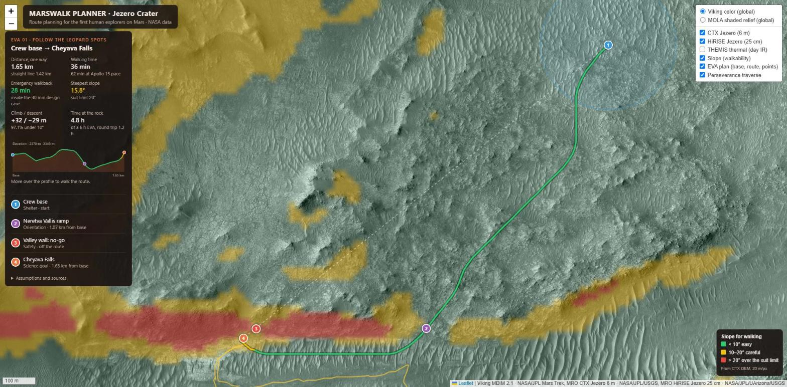
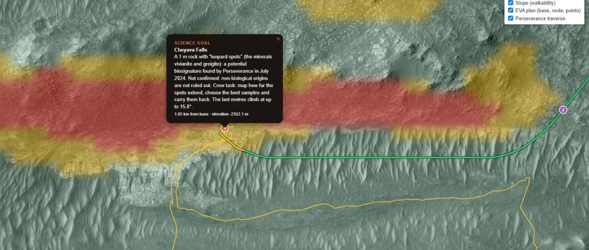

A map that plans a safe walk for the first humans in Jezero Crater, built on real NASA data.
Where do we set up the base?
Which way do we walk, and how steep is it?
How long does it take, there and back?
What is worth stopping for on the way?
Cheyava Falls is the rock where Perseverance found a potential biosignature in 2024. It is not confirmed.
A crew can do what the rover could not: map how far the spots extend, pick the best samples and carry them back.
Green, yellow and red show slope. The solid line is the planned route; the dashed line is the straight line it avoids.
The CTX elevation model of Jezero (20 m per pixel, made for Perseverance's landing) becomes a slope value for every cell.
Candidates are sites where every slope within 200 m is under 5°. The planner keeps the one with the easiest walk to the goal.
Least-cost path over the grid. Steeper ground costs more and anything over 20° is forbidden.
Times from Apollo planning speeds: 2.7 km/h walking, 3.5 km/h emergency walkback, 1.6 km/h as the slow case.
Layers on the map: HiRISE (25 cm), CTX (6 m), Viking colour, MOLA relief and THEMIS thermal from NASA Mars Trek, plus Perseverance's real traverse.
| Why not walk straight? | Length | Ground over 10° | Steepest |
|---|---|---|---|
| Straight line | 1.42 km | 350 m | 20.4° |
| Planned route | 1.65 km | 48 m | 15.8° |

HiRISE, CTX, Viking, MOLA and THEMIS mosaics (NASA Mars Trek) · Jezero CTX elevation model, 20 m (USGS / Mars 2020) · Perseverance traverse and waypoints (NASA/JPL-Caltech) · Surface radiation from Curiosity's RAD · EVA requirements and walking speeds (NASA NTRS 20210026296, 20260005410) · Cheyava Falls (NASA/JPL; Hurowitz et al. 2025, Nature)
A 20 m grid smooths out boulders and small scarps. Times do not slow down on slopes. The 10° "careful" class, the 200 m base radius and the route cost are our own margins, not NASA numbers.
More walks, starting with the Three Forks sample depot. Perseverance photos at each stop. A heads-up display (HUD) mode to follow the route during the walk. An AI-generated briefing for each walk.
Try it: mj-rojas.github.io/marswalk-planner · Open source, Apache 2.0
AI disclosure: the code, the texts and these slides were written with AI assistance (Claude, Anthropic). The images are screenshots of the live map; none are AI-generated.